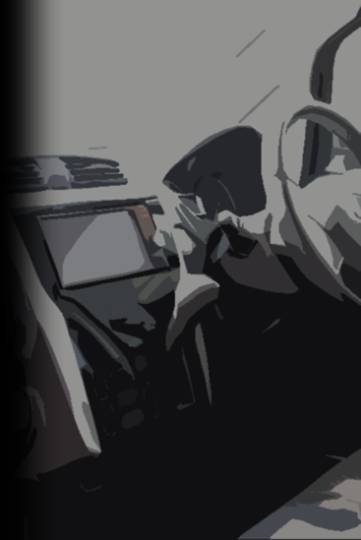
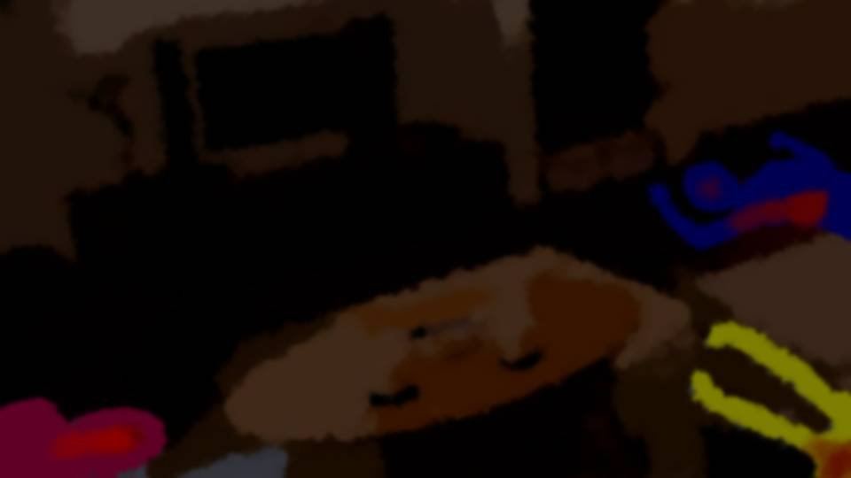
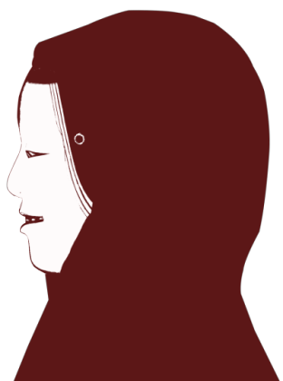
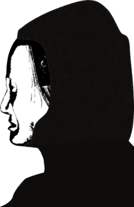
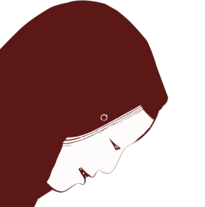
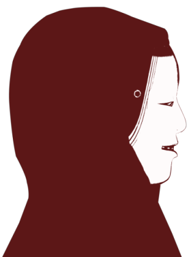
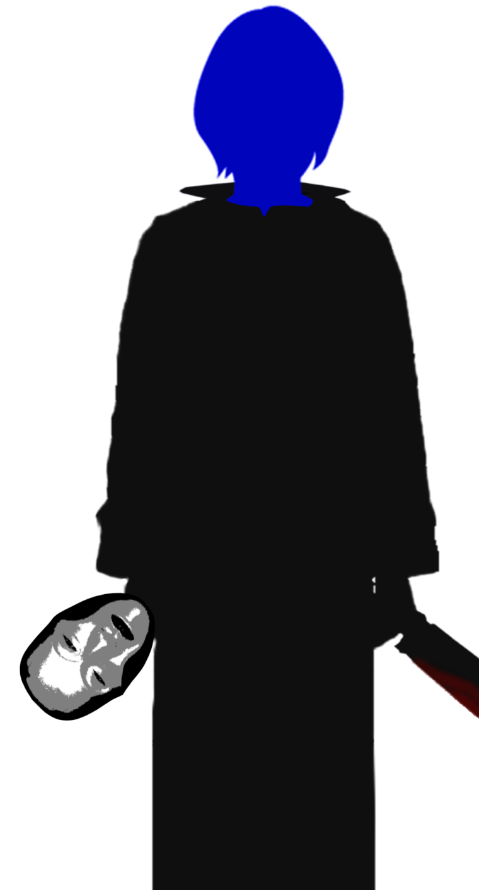
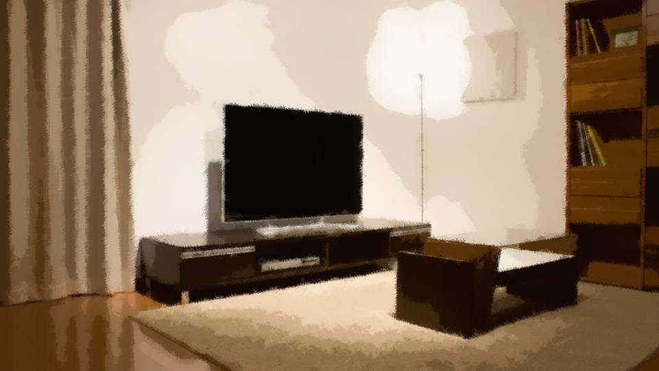

長

時刻は17時を回った。
古郡家と新村家があるマンション――レボハイツのそばに、1台の軽自動車が停まっている。
古郡家と新村家があるマンション――レボハイツのそばに、1台の軽自動車が停まっている。
運転席には、新村美冬の姿。
彼女は、真新しいスマートフォンにつながれたイヤフォンをつけている。
新村家の音が――盗聴器を仕掛けた新村春花のスマートフォンを通じて聞こえてくるのだ。
彼女は、真新しいスマートフォンにつながれたイヤフォンをつけている。
新村家の音が――盗聴器を仕掛けた新村春花のスマートフォンを通じて聞こえてくるのだ。
「そろそろね……」
助手席には、桃色の薬品が入った注射器。美冬はそれを手に取る。
助手席には、桃色の薬品が入った注射器。美冬はそれを手に取る。
「ふう……」
浅い深呼吸をする美冬。
今のため息は緊張ではない。
これからすべきことを、頭の中でもう一度確認したのだ。
美冬が注射針を腕に刺そうとしたその時だった。
浅い深呼吸をする美冬。
今のため息は緊張ではない。
これからすべきことを、頭の中でもう一度確認したのだ。
美冬が注射針を腕に刺そうとしたその時だった。
「誰よこの人！」
「逃げろ！ 死神だ！」
「先輩！ 助けて！」
「逃げろ！ 死神だ！」
「先輩！ 助けて！」
断末魔と肉を切る音、骨を砕く音。
「どういうこと……！？」
美冬は注射器を刺す前に、助手席に放り投げた。
そして赤装束と能面を身につけ、鉈とメイスを手に取った。
美冬は注射器を刺す前に、助手席に放り投げた。
そして赤装束と能面を身につけ、鉈とメイスを手に取った。
人目につかぬよう階段を使い、新村家の前に立つ。
目撃されてはまずいと、今度は深呼吸せず、美冬は素早くドアを開ける。
目撃されてはまずいと、今度は深呼吸せず、美冬は素早くドアを開ける。
中からは音も気配も感じられない。
「血の匂い……！？」
先ほどは聴覚に神経を集中させていたが、今度は嗅覚を頼り、部屋の中の様子を探る。
視覚に頼ろうにも、中は薄暗い。
先ほどは聴覚に神経を集中させていたが、今度は嗅覚を頼り、部屋の中の様子を探る。
視覚に頼ろうにも、中は薄暗い。

部屋のテレビには映画が無音で流され、窓には厚いカーテンが引かれている。
そして床には少女たちの惨殺死体が転がっている。
服や白い肌を血で汚し、睡眠とは明らかに違う窮屈そうな体勢。
そして床には少女たちの惨殺死体が転がっている。
服や白い肌を血で汚し、睡眠とは明らかに違う窮屈そうな体勢。

「いったい誰が……」
聴覚を使い、嗅覚を使い、そして視覚を使っても、今の状況を把握し、理解することができない。
次は彼女たちの肌に触れ、触覚でその状況を確認するつもりだろうか。
聴覚を使い、嗅覚を使い、そして視覚を使っても、今の状況を把握し、理解することができない。
次は彼女たちの肌に触れ、触覚でその状況を確認するつもりだろうか。
「待ってましたよ、美冬さん……」
「誰！？」
不意に美冬の耳に入るしわがれた声――。
だが美冬は、その聞き覚えのある声に身を凍らせる。
『誰？』と言ったのは、その声の主を疑ったからだ。
「誰！？」
不意に美冬の耳に入るしわがれた声――。
だが美冬は、その聞き覚えのある声に身を凍らせる。
『誰？』と言ったのは、その声の主を疑ったからだ。
美冬が振り返ると、そこにはもう1人、同じ姿をした死神が立っていた。
美冬の小面とは違い、老女の能面を着けた死神。
美冬は、この能面の意味をよく知っている。
美冬の小面とは違い、老女の能面を着けた死神。
美冬は、この能面の意味をよく知っている。


「美冬さん……ずいぶん待ったわ……」
「やっぱり、その声は……！」
能面でこもってはいるが、声を聞いた美冬は1歩、そしてもう1歩下がる。
そして鉈とメイスを床に置き、膝と手を血のついた床につける。
「やっぱり、その声は……！」
能面でこもってはいるが、声を聞いた美冬は1歩、そしてもう1歩下がる。
そして鉈とメイスを床に置き、膝と手を血のついた床につける。
「お久しぶりです。大魔女様」
美冬はひざまずいたまま、 恭 しくあいさつし、さらに言葉を続ける。
美冬はひざまずいたまま、 恭 しくあいさつし、さらに言葉を続ける。
「私および娘の春花――夫の法要を欠席したこと、深くお詫びいたします。
わざわざ荒田集落からお越し下さったのですね……。
しかしなぜですか？ なぜあなたがこの子たちを……」
美冬は顔を下げたまま、大魔女に問う。
美冬は顔を下げたまま、大魔女に問う。
「1人はみんなのために。みんなは1人のために。
小学生でも分かる荒田集落の標語ですが、お忘れですか？」
「いえ、そんなことはありません。 しかし大魔女様……！ 私は荒田にこんなことを頼んだ覚えはありません！ これは……私と春花の問題なのです」
「なぜです？ なぜ古郡良治を？」
「それは…… でも、どうして彼の名をご存じなのですか？」
「いえ、そんなことはありません。 しかし大魔女様……！ 私は荒田にこんなことを頼んだ覚えはありません！ これは……私と春花の問題なのです」
「なぜです？ なぜ古郡良治を？」
「それは…… でも、どうして彼の名をご存じなのですか？」
「20年ほど前、美冬さんと栄一郎の婚姻式に、古郡夫妻を荒田に呼びたいと言いましたよね？
部外者の参加など許可できませんでしたが、その名は覚えていますよ。
それに彼の名は、今や悲惨な殺され方をした哀れな男と日本中で有名ですが」
「確かに……」
「顔を上げなさい、美冬さん」
「確かに……」
「顔を上げなさい、美冬さん」

美冬は顔を上げる。
が、床に着いた手が、何かをしようと迷っているそぶりをみせる。
が、床に着いた手が、何かをしようと迷っているそぶりをみせる。
「何をしているのです？ 顔を上げろと言うことは、顔を見せろと言うことです」
「…………」
美冬は言われるがまま面を外し、床に置く。
「美冬さん……あなた泣いているじゃありませんか……」
「だって……春花が……！」
「…………」
美冬は言われるがまま面を外し、床に置く。
「美冬さん……あなた泣いているじゃありませんか……」
「だって……春花が……！」
「あなたが住んでいるこの町で、惨殺死体が出たという話を聞きましてね。
四月八日の十三回忌。分からないわけないでしょう」
「申し訳ありませんでした……」
大魔女は転がっている死体に顔を向ける。
「申し訳ありませんでした……」
大魔女は転がっている死体に顔を向ける。
「古郡なつみ。五島絵梨奈。そして孫の春花。
代わりに私がやりましたが、これでよかったのですか？」
「…………」
美冬は黙ってしまった。
「…………」
美冬は黙ってしまった。
「答えなさい美冬さん」
大魔女が叫び、メイスでテーブルを殴ると、美冬の身体がびくりと震えた。
大魔女が叫び、メイスでテーブルを殴ると、美冬の身体がびくりと震えた。
「す……少なくとも……ご、五島絵梨奈を殺す予定はありませんでした！」
「そうでしたか。これはかわいそうなことをしてしまいましたね」
大魔女は五島絵梨奈の頭をそっと撫でる。
「どうして春花を？」
大魔女は古郡なつみの頭も撫ではじめた。
「春花を……手放したくないからです。 古郡良治は言いました。 もう……春花を任せることはできないと……」
「そうでしたか。これはかわいそうなことをしてしまいましたね」
大魔女は五島絵梨奈の頭をそっと撫でる。
「どうして春花を？」
大魔女は古郡なつみの頭も撫ではじめた。
「春花を……手放したくないからです。 古郡良治は言いました。 もう……春花を任せることはできないと……」
「それはどういう意味ですか？」
「え……？」
「まあ……いいでしょう。 でも、どうして古郡なつみまで？」
美冬は床についた手をぎゅっと握った。
「え……？」
「まあ……いいでしょう。 でも、どうして古郡なつみまで？」
美冬は床についた手をぎゅっと握った。
「彼女は、本物の魔女です……！ 桜が咲くこの季節だけ、未来を予知できます。
そして……人を呪い殺すこともできるのです」
「呪い、とは？」
「死神を呼び出すのではなく、本当の意味での呪いで、人を殺せるのです。 栄一郎さんは、それで……！ それに……春花は私の娘です！」
美冬は顔を上げると――。
「呪い、とは？」
「死神を呼び出すのではなく、本当の意味での呪いで、人を殺せるのです。 栄一郎さんは、それで……！ それに……春花は私の娘です！」
美冬は顔を上げると――。

「え……？」
大魔女は老女の能面を外していた。
「春花……？」
「お母さんごめん……。ばあちゃんのモノマネ、前よりうまくなってたでしょ？」
大魔女は老女の能面を外していた。
「春花……？」
「お母さんごめん……。ばあちゃんのモノマネ、前よりうまくなってたでしょ？」
「捕えろ！」
他の部屋からドタドタと警察官が乱入し、膝をついたままのお母さんを難なく取り押さえた。
「新村美冬！ 殺人および死体遺棄、殺人教唆の疑いで逮捕する！」
あっという間にお母さんに手錠がかけられてしまった。
他の部屋からドタドタと警察官が乱入し、膝をついたままのお母さんを難なく取り押さえた。
「新村美冬！ 殺人および死体遺棄、殺人教唆の疑いで逮捕する！」
あっという間にお母さんに手錠がかけられてしまった。



そして私たちになりすましていた婦警が、もぞもぞと起き上がる。
「作戦成功……ですね……」
他の部屋に隠れていた2人も私の前に現れる。
五島に笑顔はない。なつみは何も言わなかった。
「作戦成功……ですね……」
他の部屋に隠れていた2人も私の前に現れる。
五島に笑顔はない。なつみは何も言わなかった。
「能面つけてばあちゃんの真似すれば、変なことする前に捕まえられると思ってさ……」
「よし、連れていけ！」
お母さんは返事をする間もなく、連れて行かれた。
「よし、連れていけ！」
お母さんは返事をする間もなく、連れて行かれた。
「お母さん……！」
私は立つことができず、床に座り込んでしまった。
私は立つことができず、床に座り込んでしまった。
「なんだよこれ……。私の作戦、うまくいっちゃったよ……。
なあ言ってくれよ。実はこれ、ドッキリなんだろ？
私を笑いものにするために、みんなでだましたんだろ？」
なつみと五島は、2人とも口をぎゅっと閉じている。
なつみと五島は、2人とも口をぎゅっと閉じている。
「春花……」
なつみが膝をついている私を抱き締めてくれた。
「ごめんね。やっぱり私こそ、魔女なのかな……。私が風船を飛ばさなければ、こんな……！」
どうしてなつみが謝るんだよ……。なつみはいつも私を支えてくれたじゃないか。
なつみが膝をついている私を抱き締めてくれた。
「ごめんね。やっぱり私こそ、魔女なのかな……。私が風船を飛ばさなければ、こんな……！」
どうしてなつみが謝るんだよ……。なつみはいつも私を支えてくれたじゃないか。
「美冬さんは移送した。捜査協力感謝します」
「ねえ、おじさん！ 先輩たち、どうなっちゃうんですか！？」
「お、おじさん……？」
「先輩たち、親がこんなだからって、元木町を追い出されたりしませんよね！？」
「ねえ、おじさん！ 先輩たち、どうなっちゃうんですか！？」
「お、おじさん……？」
「先輩たち、親がこんなだからって、元木町を追い出されたりしませんよね！？」
「まあ、その辺は心配するな。ここまで身を粉にして事件解決に導いてくれたんだ。
学校や自治体も、ちゃんと保護してくれるだろう」
「信じていいんですよね……？」
五島がうるうると伊勢さんを見つめる。
「信じていいんですよね……？」
五島がうるうると伊勢さんを見つめる。
「のののおお！ ああ当たり前だ！ いいい伊勢大二郎！ この身を犠牲にしてでも！」

「ありがとうおじさん！ ほっぺにちゅーしようか！？」
五島がニカッと笑いかける。
「ぜぜぜぜ絶対だめだ！ 美少女は愛でるものであって、絶対に手を出してはならんのだ！」
分からないことを言っているが、五島も少しでも明るく振舞おうとしてくれている。
五島がニカッと笑いかける。
「ぜぜぜぜ絶対だめだ！ 美少女は愛でるものであって、絶対に手を出してはならんのだ！」
分からないことを言っているが、五島も少しでも明るく振舞おうとしてくれている。
「ごほん！ それと、新村さんも古郡さんも、色々と大変だろうが、話を聞きたい。一緒に来てもらえるか？」
「ほら、春花……」
なつみはまだ足に力の入らない私を立たせてくれた。
なつみもお父さんが死んだって言うのに、この強さはどこから来るんだ？
「ほら、春花……」
なつみはまだ足に力の入らない私を立たせてくれた。
なつみもお父さんが死んだって言うのに、この強さはどこから来るんだ？
「なつみ……。
どうしてお前はそんなに……そんなに強いんだ？」
「別に……ただ今やれることをやっているだけ。 春花が絶対にみんなを助けたいって言ったのに、私がへこたれてるわけにはいかないでしょ？ だって、私がへこたれたら、みんなを助けられないから……」
「別に……ただ今やれることをやっているだけ。 春花が絶対にみんなを助けたいって言ったのに、私がへこたれてるわけにはいかないでしょ？ だって、私がへこたれたら、みんなを助けられないから……」
「なんだよ……。なつみも五島も……。
私、本当に頼りっぱなしだよな……。1番年上なのに……」
「1人はみんなのために、みんなは1人のために。新村家のモットーでしょ？」
「ははは……。こんな時に……バカかよ……」
「1人はみんなのために、みんなは1人のために。新村家のモットーでしょ？」
「ははは……。こんな時に……バカかよ……」
2人がいたから、みんな死なずに済んだ。
お母さんは逮捕され、なつみのお母さんが捕まるのも時間の問題だろう。
何より、なつみのお父さんには本当に申し訳ないことをした。
でもこれが、ベストとは言えないけど、今できる1番まともな結末だよな……。
お母さんは逮捕され、なつみのお母さんが捕まるのも時間の問題だろう。
何より、なつみのお父さんには本当に申し訳ないことをした。
でもこれが、ベストとは言えないけど、今できる1番まともな結末だよな……。
Read ✓ Next in this arc →